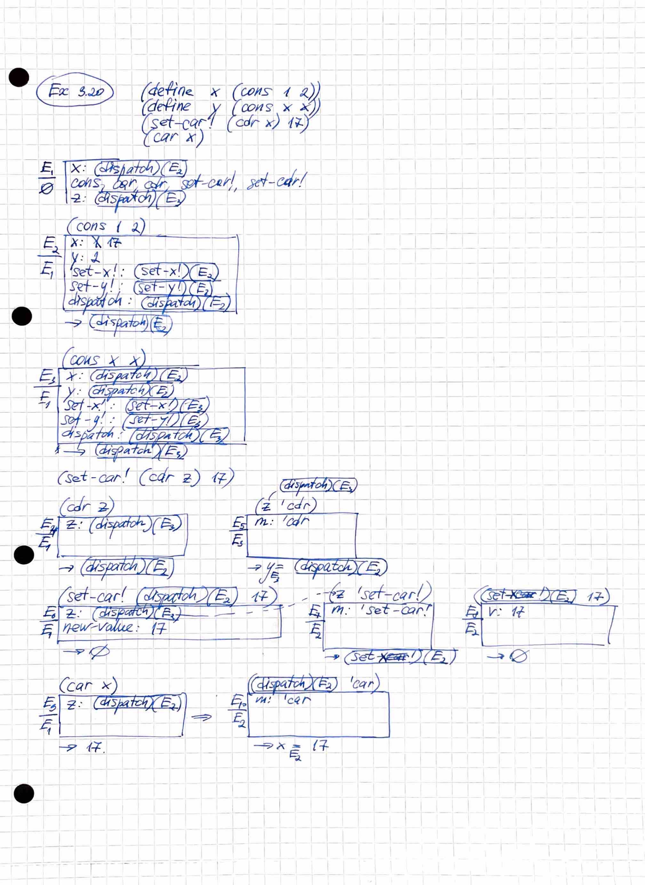

3 Modularity, Objects and State
Table of Contents
Intro
In previous chapters we introduced:
- basic elements from which programs are made
- how to combine primitives to construct compound entities
- abstraction is vital to cope with complexity of large systems
But these are not sufficient for designing programs.
Effective program synthesis also requires an organizational principles that can guide us in formulating overall design of the system.
Effective program synthesis requires organizational principles that can guide us in formulating overall design of a program.
In particular, we need strategies to help us structure large system so the they are modular, that is, so that they are divided "naturally" into coherent parts that can be developed and maintained separately.
One (what are the others Gerald??) powerful design strategy, is to base the structure of a program on the structure of the system being modelled. For each object in the system we construct corresponding computational object. For each system action we define a symbolic operation in our computational model.
Our hope in using this strategy is that extending the model to accomodate new objects or new actions will require no strategic changes to the program, only the addition of the new symbolic analogs of those objects or actions. If we are successful in our system organization, then to add a new feature or debug an old one we will have to work in a localized part of the system.
To a large extent the way we orgnize programs depends on our perception of the systems being modelled. In this chapter we will investigate two organizational strategies arising from two different "world views" of the structure of systems.
First organizational strategy concentrates on objects, viewing a large system as a collection of objects whose behavior may change over time.
An alternative organizational strategy concentrates on the streams of information that flow in the system.
3.1 Assignment and Local State
We ordinarily view the world as populated by independent objects, each of which has a state that changes over time. An object is said to "have state" if its history influences its behavior. Object's state can be characterized by one or more state variables.
In a system composed of many objects, the objects are rarely completely independent. Each may influence the states of others through interactions, which servie to couple the state variables of one object to those of another.
If we choose to model the flow of time in the system by the elapsed time in the computer, then we must have a way to construct computational objects whose behaviors change as our programs run.
3.1.1 Local State Variables
(define balance 100) (define (withdraw amount) (if (>= balance amount) (begin (set! balance (- balance amount)) balance) "Insufficient funds"))
balance is global and could be modified by anyone,
(define new-withdraw (let ((balance 100)) (lambda (amount) (if (>= balance amount) (begin (set! balance (- balance amount)) balance) "Insufficient funds"))))
#lang sicp (define (make-withdraw balance) (lambda (amount) (if (>= balance amount) (begin (set! balance (- balance amount)) balance) "Insufficient funds"))) (define W1 (make-withdraw 100)) (define W2 (make-withdraw 100)) (W1 50) (W2 70)
#lang sicp (define (make-account balance) (define (withdraw amount) (if (>= balance amount) (begin (set! balance (- balance amount)) balance) "Insufficient funds")) (define (deposit amount) (set! balance (+ balance amount)) balance) (define (dispatch m) (cond ((eq? m 'withdraw) withdraw) ((eq? m 'deposit) deposit) (else (error "Unknown request -- MAKE-ACCOUNT" m)))) dispatch) (define a (make-account 0)) ((a 'deposit) 100) ((a 'deposit) 50) ((a 'withdraw) 120) ((a 'withdraw) 100) ((a 'withdraw) 30)
Exercise 3.1 - accumulator
An accumulator is a function of one numeric argument, when called repeatedly accumulates it's arguments into a sum. Each time it is called it returns the currently accumulated sum.
(define (make-accumulator sum) (lambda (arg) (set! sum (+ sum arg)) sum)) (define acc (make-accumulator 10)) (acc 20) (acc 30)
Exercise 3.2 - make-monitored
Write a procedure make-monitored that takes as input a procedure, f, that itself takes one input. The result returned by make-monitored is a third procedure, say mf, tat keeps track of the number of times it has been called by maintaining an internal counter.
If the input to mf is the special symbol how-many-calls?, then mf returns the value of the counter.
If the input to mf is the special symbol reset-count them mf resets the counter to zero.
(define (make-monitored f) (let ((cnt 0)) (define (mf x) (cond ((eq? x 'how-many-calls?) cnt) ((eq? x 'reset-counter) (set! cnt 0) cnt) (else (set! cnt (+ 1 cnt)) (f x)))) mf))
(define s (make-monitored sqrt)) (s 100) (s 'how-many-calls?) (s 10) (s 10) (s 10) (s 10) (s 'how-many-calls?) (s 'how-many-calls?) (s 'how-many-calls?) (s 'reset-counter) (s 'how-many-calls?)
Exercise 3.3 - password-protected accounts
(define (make-account amount password) (define (withdraw a) (begin (if (> amount a) (begin (set! amount (- amount a)) amount) "Insufficient funds"))) (define (deposit a) (begin (set! amount (+ amount a)) amount)) (define (incorrect-password a) "Incorrect password") (define (dispatch p m) (if (eq? p password) (cond ((eq? m 'withdraw) withdraw) ((eq? m 'deposit) deposit)) incorrect-password)) dispatch) (define acc (make-account 100 'secret)) ((acc 'secret 'withdraw) 10) ((acc 'secret 'deposit) 100) ((acc 'secret 'withdraw) 1000) ((acc 'pecret 'withdraw) 190)
Exercise 3.4 - password-protected accounts with cops
(define (call-the-cops) (display "[police called]") (newline)) (define (make-account amount password) (let ((incorrect-password-count 0)) (define (withdraw a) (begin (if (> amount a) (begin (set! amount (- amount a)) amount) "Insufficient funds"))) (define (deposit a) (begin (set! amount (+ amount a)) amount)) (define (dispatch p m) (if (not (eq? p password)) (begin (set! incorrect-password-count (+ 1 incorrect-password-count)) (if (> incorrect-password-count 7) (call-the-cops) false) (lambda (x) "Incorrect password")) (begin (set! incorrect-password-count 0) (cond ((eq? m 'withdraw) withdraw) ((eq? m 'deposit) deposit))))) dispatch)) (define acc (make-account 100 'secret)) ((acc 'secret 'withdraw) 10) ((acc 'secret 'deposit) 100) ((acc 'secret 'withdraw) 1000) ((acc 'pecret 'withdraw) 190) ((acc 'pecret 'withdraw) 190) ((acc 'pecret 'withdraw) 190) ((acc 'pecret 'withdraw) 190) ((acc 'pecret 'withdraw) 190) ((acc 'pecret 'withdraw) 190) ((acc 'pecret 'withdraw) 190) ((acc 'pecret 'withdraw) 190) ((acc 'pecret 'withdraw) 190) ((acc 'secret 'withdraw) 1000) ((acc 'pecret 'withdraw) 190)
3.1.2 The Benefits of Introducing Assignment
Introducing assignment leads us into a thicket of difficult conceptual issues. Nevertheless, viewing our system as a collection of objects with local state is a powerful technique for maintaining a modular design.
Consider the design of a procedure rand, that, whenever it is called, returns an integer chosen at random.
We want successive calls to rand to produce a sequence of numbers having certain statistical properties (uniform distribution).
To not focus on method of generating such sequences, assume we have a procedure rand-update, such that x2 = (rand-update x1), x3 = (rand-update x2) and so on, where x1, x2, x3, ... sequence has the uniform distribution.
We can implement rand as a procedure with a local state variable x:
(define rand (let ((x random-init)) (lambda () (set! x (rand-update x)) x)))
Of course, we could generate the same sequence of random numbers without using local variable by simply calling rand-update directly. But then any part of our program that used random numbers would have to explicitly remember the current value of x to be passed as an argument to rand-update.
Consider using random numbers to imlement a technique called Monte Carlo simulation.
The Monte Carlo method consists of choosing sample experiments at random from a large set and then making deductions on the basis of the probabilities estimated from tabulating the results of those experiments.
For example, we can appoximate \(\pi\) using the fact that \(6/\pi^2\) is the probability that two integers choosen at random will have no factors in common; that is that their gcd is 1. To obtain the approximation to \(\pi\), we perform a large number of experiments. In each experiment we choose two integers at random and perform a test to see if their GCDs is 1. The fraction of times that the test is passed gives us our estimate of \(6/\pi^2\).
#lang sicp (define (estimate-pi trials) (sqrt (/ 6 (monte-carlo trials cesaro-test)))) (define (cesaro-test) (= (gcd (random 1000000000) (random 1000000000)) 1)) (define (monte-carlo trials experiment) (define (iter trials-remaining trials-passed) (cond ((= trials-remaining 0) (/ trials-passed trials)) ((experiment) (iter (- trials-remaining 1) (+ trials-passed 1))) (else (iter (- trials-remaining 1) trials-passed)))) (iter trials 0)) (estimate-pi 10000000)
Alternatively, using rand-update:
(define random-init 10) (define (estimate-pi trials) (sqrt (/ 6 (random-gcd-test trials random-init)))) (define (random-gcd-test trials initial-x) (define (iter trials-remaining trials-passed x) (let ((x1 (rand-update x))) (let ((x2 (rand-update x1))) (cond ((= trials-remaining 0) (/ trials-passed trials)) ((= (gcd x1 x2) 1) (iter (- trials-remaining 1) (+ trials-passed 1) x2)) (else (iter (- trials-remaining 1) trials-passed x2)))))) (iter trials 0 initial-x))
In the version without local state, user code should manipulate the random numbers x1 and x2, and recycle x2 as the new input to rand-update. The explicit handling of randomness intertwines with the experiment code, and greatly constricts the system with exactly 2 random numbers, making it impossible to reuse with 1 or 3.
Even esimtate-pi should be aware of this random system, by supplying random-init.
All this makes it difficult to isolate the Monte Carlo idea so that it can be applied to other tasks.
In the first version assignment helps to encapsulate the state of the random-number generator withing the rand procedure, so that the details of random-number generation remaing independent of the rest of the program.
From the point of view of one part of a complex system, the other parts appear to change in time. They have hidden time-varying local state.
Exercise 3.5 - Monte Carlo integration
Space described by a predicate \(P(x,y)\) that is true for all points inside the region and false otherwise.
To estimate the area of the region, begin by choosing a rectangle that contains the region. The desired integral is the area of that portion of the rectangle that lies in the region. We can estimate the integral by picking, at random, points \((x, y)\) that lie in the rectangle, and testing \(P(x,y)\) for each point. If we try this enough times, the fraction of points inside the region approximates the fraction of rectangle occupied be the region. Hence, multiplying this fraction by the area of the entire rectangle gives an estimate of the area of the region.
#lang sicp (define (random-in-range low high) (let ((range (- high low))) (+ low (random range)))) (define (estimate-integral P x1 y1 x2 y2 trials) (define (experiment) (P (random-in-range x1 x2) (random-in-range y1 y2))) (* (- x2 x1) (- y2 y1) (monte-carlo trials experiment))) (define (monte-carlo trials experiment) (define (iter remaining passed) (cond ((zero? remaining) (/ passed trials)) ((experiment) (iter (- remaining 1) (+ passed 1))) (else (iter (- remaining 1) passed)))) (iter trials 0)) (define (square x) (* x x)) (define (in-circle cx cy r) (lambda (x y) (< (+ (square (- x cx)) (square (- y cy))) (square r)))) (estimate-integral (in-circle 1.0 1.0 1.0) 0.0 0.0 2.0 2.0 10000000)
monte-carlo is the same as used for Cesaro-based estimation, only experiment code differs.
Exercise 3.6 - rand reset
It is useful to be able to reset a random-number generator to produce a sequence starting from a given value.
Design a new rand procedure that is called with an argument that is either the symbol generate or reset, and behaves as follows (rand 'generate) outputs a random value, and ((rand 'reset) <new-value>) resets the internal state variable with the new-value.
(define (rand-update x) (remainder (+ (* 115249 x) 112909) 108301)) (define random-init 0) (define rand (let ((x random-init)) (lambda (method) (cond ((eq? method 'generate) (begin (set! x (rand-update x)) x)) ((eq? method 'reset) (lambda (n) (set! x n))) (else (error "Unknown method -- RAND" method)))))) (rand 'generate) (rand 'generate) (rand 'generate) (rand 'generate) (rand 'generate) ((rand 'reset) 0) (rand 'generate) (rand 'generate) (rand 'generate)
3.1.2 The Costs of Introducing Assignment
As we have seen, the set! operation enables us to model objects that have local state. However, this advantage comes at a price.
Substitution model of procedure application is no longer adequate for interpreting programs. Moreover, no simple model with "nice" mathematical properties can be an adequate framework for dealing with objects and assignment in programming languages.
So long as we do not use assignments, two evaluations of the same procedures applied to the same arguments will produce the same results. Programming without any use of assignments is known as functional programming.
The trouble is that substitution is based ultimately on the notion that the symbols are essentially names for values.
> But as soon as we introduce set! and the idea the the value of a variable can change, a variable can no longer be simply a name.
Without set!: name -> value.
With set!: name -> variable -> value.
Now, variable refer to some place where the value is stored and can be changed. Environments play this role of "place".
Sameness and change
Introducing change into computational model renders what was previously straightforward as problematic. Consider the concept of two things being "the same".
Without set!: if two values are created by the same expression, they are "the same", meaning they are computationally equivalent and can be substituted one for the other.
With set!: even if two variables are created by the same expression, they are not "the same", they may have different histories, and hold different local state variables. The can not be substituted one for the other.
A language that supports the concept that "equals can be substituted for equals" in an expressions without changing the value of expression is said to be referentially transparent.
Reasoning about the programs that contain assignment becomes drastically more difficult.
In real world, to decide if two apparently identical objects are the "same", one has to change one object and observe the other changed in the same way. But to determine if it's changed one has to observe "same" object at two distinct times, and detect some property change between two observations. Thus, we can not determine "change" without a priori notion of "sameness", and we cannot determine sameness without observing the change.
Pitfalls of imperative programming
Programming that makes extensive use of assignment is called imperative programming.
- Order of assignment is significant.
- Concurrent execution complicates things even more.
Exercise 3.7 - joint account
Define a procedue make-joint that takes three arguments:
- password-protected account
- auth password
- another password
, and returns an additional access to original account, protected by another password.
One solution is to wrap dispatch definition in a function that accepts password.
Probably a better one would be to provide a restricted version of dispatch to the joint account (e.g. without 'make-joint method).
#lang sicp (define (make-account amount password) (define (withdraw a) (if (>= amount a) (begin (set! amount (- amount a)) amount) "Insufficient funds")) (define (deposit a) (set! amount (+ amount a)) amount) (define (make-dispatch password) (define (dispatch m p) (cond ((not (eq? p password)) (lambda (x) "Incorrect password")) ((eq? m 'withdraw) withdraw) ((eq? m 'deposit) deposit) ((eq? m 'make-joint) make-dispatch) (else (error "Unknown method -- MAKE-ACCOUNT" m)))) dispatch) (make-dispatch password)) (define (make-joint acc verify-password new-password) ((acc 'make-joint verify-password) new-password)) (define paul (make-account 100 'secret)) ((paul 'withdraw 'secret) 10) (define peter (make-joint paul 'secret 'pecret)) ((peter 'withdraw 'pecret) 90) ((paul 'withdraw 'secret) 10) (define pylyp (make-joint peter 'pecret 'qecret)) ((pylyp 'deposit 'qecret) 100) ((paul 'withdraw 'secret) 10)
Exercise 3.8 - order of evaluation
Define a simple procedure f the evaluating (+ (f 0) (f 1)) will return 0 if the arguments evaluated left to right, and 1 if the arguments evaluated right to left.
(define f (let ((s null)) (lambda (x) (if (null? s) (begin (set! s x) s) 0))))
<<ex3.8-f>> (+ (f 0) (f 1))
(+ (f 1) (f 0))
3.2 The Environment Model of Evaluation
Substitution model of expression evaluation:
To apply a compound procedure, evaluate the body of the procedure with each formal parameter replaced with passed argument.
With assignment, the definition is no longer adequate. A variable can no longer be considered a name for a value. Rather, variable must somehow designate the place to store the value. In a new model evaluation, these places will be maintained in structures called environments.
An environment is a sequence of frames.
Each frame is a table (possible empty) of bindings, which associate the variable name with the corresponding value. A single frame can contain at most one binding for each variable.
Each frame stores a pointer to its enclosing environment, unless, the frame is considered to be global.
The value of a variable w.r.t. an environment is the value given by the binding of the variable in the first frame in the environment that contains binding for that variable. If no frame in the sequence specifies a bindings for the variable, then the variable is said to be unbound in the environment.
Expressions in a programming language have no meaning on its own, only within some environment where it's evaluated.
3.2.1 The Rules for Evaluation
The overall specification for how the interpreter evaluates a combination is not changed:
- evaluate the subexpressions of the combination
- apply the value of the operator subexpression to the values of the operand subexpressions
The environment model of evaluation replaces a substitution model in specifying what it means to apply a compound procedure to arguments.
In the environment model of evaluation, procedure is always a pair consisting of some code and a pointer to an environment. Procedures are created in one way only: by evaluating a lambda expression. This produces a procedure whose code is obtained from the text of the lambda expression, and whose environment is the environment in which the lambda expression was evaluated to produce a procedure.
In general, define (which is a syntactic sugar for lambda) creates definitions by adding bindings to frames.
Knowing how procedures are created, here's how to apply a procedure according to environment model: To apply a procedure to arguments, create a new environment containing a frame that binds the parameters to the values of arguments. The enclosing environment of this frame is the environment specified by the procedure. Now, within a new environment evaluate the procedure body.
Summary for the environment model of procedure application:
- the procedure object is applied to a set of arguments by constructing a frame, binding the formal parameters to the values of the arguments of the call, and then evaluating the body of the procedure in the context of the new environment constructed
- a procedure is created by evaluating a
lambdaexpression relative to a given environment. The resulting procedure is a pair constiting of the text of thelambdaexpression and the environment in which the procedure was created.
define creates a binding in the current environment frame and assigns to the symbol the indicated value.
Evaluating set! in some environment locates the binding of the variable in the environment and changes that binding to the new value. That is, it finds the first frame in the environment that contains a binding for the variable and modifies that frame. If the variable is unbound in the environment, set! signals an error.
3.2.2 Applying Simple Procedures
… using paper …
3.2.3 Frames as the Repository of Local State
… using paper …
3.2.4 Internal Definitions
… using paper …
3.3 Modeling with Mutable Data
Chapter 2 introduced the discipline of data abstraction - when data structures are specified in terms of data constructors and data selectors. But that does not address the desire to model systems composed of objects with changing state.
Thus, we also need to have means to update the state of compound object, in addition to constructing and selecting from them.
Now data abstraction has one additional category: Constructors, selectors, mutators.
Data objects with defined mutators are known as mutable data objects.
3.3.1 Mutable List Structure
cons, car, cdr, append and list allow to construct and get information from the objects, but not to update them.
set-car! and set-cdr! are the primitives for updating pairs.
Exercise 3.13
#lang sicp (define (last-pair x) (if (null? (cdr x)) x (last-pair (cdr x)))) (define (make-cycle x) (set-cdr! (last-pair x) x) x) (define z (make-cycle (list 'a 'b 'c))) z (last-pair z)
Exercise 3.14
#lang sicp (define (mystery x) (define (loop x y) (if (null? x) y (let ((temp (cdr x))) (set-cdr! x y) (loop temp x)))) (loop x '())) (define v (list 'a 'b 'c 'd)) (define w (mystery v)) v w
Sharing and Identity
Theoretical issues of "sameness" and "change" arise in practice when individual pairs are shared among different data objects.
(define x (list 'a 'b)) (define z1 (cons x x))
z1 is a pair whose car and cdr both point to the same pair x.
In general, using cons to construct lists will result in an interlinked structure of pairs, in which many individual pairs are shared by many different structures.
(define z2 (cons (list 'a 'b) (list 'a 'b)))
z2 is a pair whose car and cdr point to two distinct pairs, each having 'a and 'b in its cells.
In Scheme, there is a unique symbol with any given name, so symbols are shared.
Sharing is undetectable until constructors and selectors are used, but with mutators added it becomes significant.
(define (set-to-wow! x) (set-car! (car x) 'wow) x)
(set-to-wow! z1) will update z1 to ((wow b) wow b).
(set-to-wow! z2) will update z2 to ((wow b) a b).
eq? tests whether two objects are equal as pointers.
In general, set-car! and set-cdr! should be used with full understanding how data objects are shared.
Exercise 3.15, 3.16
… using paper …
Exercise 3.17 - count pairs in structure
#lang sicp (define (new-set) '()) (define (empty-set? s) (null? s)) (define (size-set s) (if (null? s) 0 (+ 1 (size-set (cdr s))))) (define (contains-set? s x) (cond ((null? s) false) ((eq? (car s) x) true) (else (contains-set? (cdr s) x)))) (define (add-set s x) (if (contains-set? s x) s (cons x s))) (define (union-set s1 s2) (cond ((null? s1) s2) ((contains-set? s2 (car s1)) (union-set (cdr s1) s2)) (else (cons (car s1) (union-set (cdr s1) s2))))) (define (count-pairs x) (define (recur x seen) (cond ((or (not (pair? x)) (contains-set? seen x)) seen) (else (let ((new-seen (add-set seen x))) (union-set (recur (car x) new-seen) (recur (cdr x) new-seen)))))) (size-set (recur x (new-set)))) (count-pairs (list 'a 'b 'c)) (count-pairs (cons (list 'a 'b) (list 'a 'b))) (define x (list 'a 'b)) (count-pairs (cons x x)) (define (last-pair xs) (if (null? (cdr xs)) xs (last-pair (cdr xs)))) (define (make-cycle x) (set-cdr! (last-pair x) x) x) (count-pairs (make-cycle x))
Exercise 3.18 - detect cycle
Write a procedure that examines a list and determines whether it contains a cycle.
#lang sicp (define (detect-cycle x) (define (iter y) (cond ((null? y) false) ((eq? y x) true) (else (iter (cdr y))))) (if (null? x) false (iter (cdr x)))) (define (last-pair x) (if (null? (cdr x)) x (last-pair (cdr x)))) (define (make-cycle x) (set-cdr! (last-pair x) x) x) (detect-cycle (make-cycle '(a b c))) (detect-cycle '(a b c))
Exercise 3.19 - detect cycle in constant space
My solution in 3.18 already consumes constant space besides the size of the input list.
Mutation is just assignment
(define (cons x y) (define (set-x! v) (set! x v)) (define (set-y! v) (set! y v)) (define (dispatch m) (cond ((eq? m 'car) x) ((eq? m 'cdr) y) ((eq? m 'set-car!) set-x!) ((eq? m 'set-cdr!) set-y!) (else (error "Unknown message -- CONS" m)))) dispatch) (define (car x) (x 'car)) (define (cdr x) (x 'cdr)) (define (set-car! x v) ((x 'set-car!) v)) (define (set-cdr! x v) ((x 'set-cdr!) v))
Cons can be implemented using only set! and local state.
Exercise 3.20 - environment diagrams for cons
